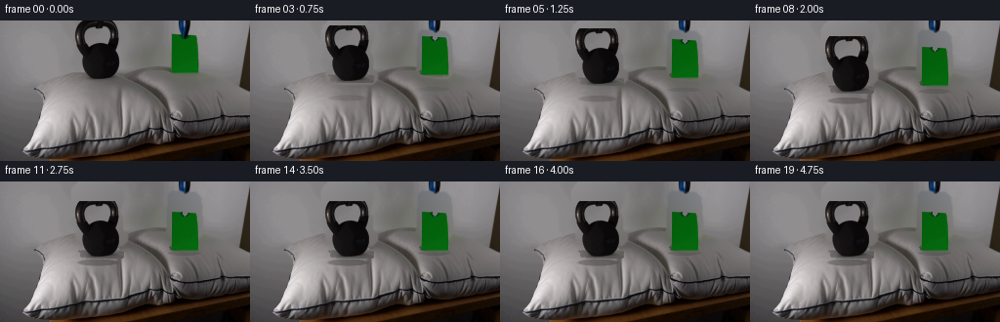
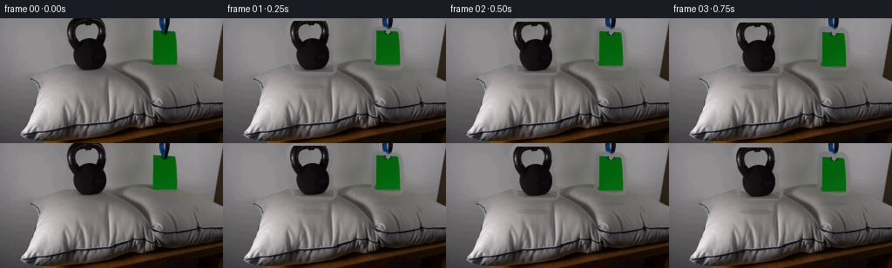
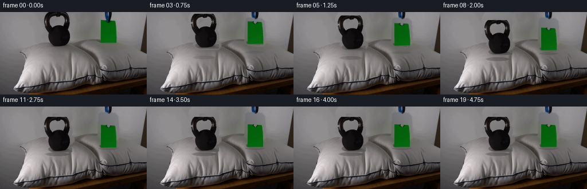
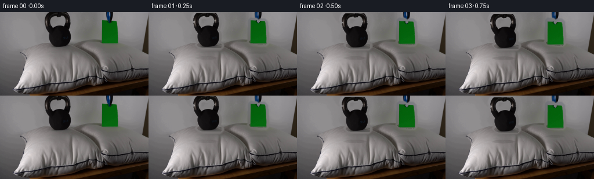
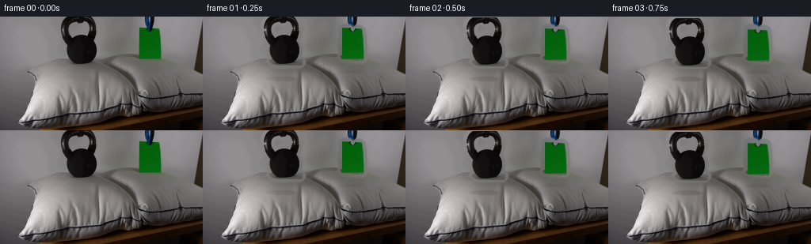

CODING AGENTS AS PIXEL WORLD MODELS
traex/DeepSeek-V4.1-Flash · 0193
点击播放 · 原生 RGB 像素
逐轮保存的候选
回放视频、检查图与代码变化。
每份候选均可单独播放。实际图片检查记录在下方工具轨迹中。
候选 01播放与检查图
点击播放 · 原生 RGB 像素


展开代码变化
--- 上一保存版本
+++ 本次保存版本
@@ -0,0 +1,214 @@
+from pathlib import Path
+
+import cv2
+import numpy as np
+from PIL import Image
+from scipy import ndimage as ndi
+
+import artifact_io
+
+
+CASE = Path(__file__).resolve().parent
+W, H, N, FPS = 256, 144, 20, 4
+
+
+def ellipse(cx, cy, rx, ry):
+ yy, xx = np.mgrid[:H, :W]
+ return ((xx - cx) / rx) ** 2 + ((yy - cy) / ry) ** 2 <= 1.0
+
+
+def soft_ellipse(cx, cy, rx, ry):
+ yy, xx = np.mgrid[:H, :W].astype(np.float32)
+ r = np.sqrt(((xx - cx) / rx) ** 2 + ((yy - cy) / ry) ** 2)
+ return np.clip((1.04 - r) / 0.18, 0.0, 1.0).astype(np.float32)
+
+
+def extract_objects(src):
+ rgb = src.astype(np.float32)
+ red, green, blue = rgb[..., 0], rgb[..., 1], rgb[..., 2]
+ yy, xx = np.mgrid[:H, :W]
+
+ kettle = (
+ (yy >= 3)
+ & (yy <= 61)
+ & (xx >= 72)
+ & (xx <= 126)
+ & (rgb.mean(2) < 112)
+ )
+ kettle = ndi.binary_fill_holes(kettle)
+ kettle = ndi.binary_opening(kettle, iterations=1)
+ kettle = ndi.binary_closing(kettle, iterations=2)
+ labels, count = ndi.label(kettle)
+ if count:
+ sizes = np.bincount(labels.ravel())
+ sizes[0] = 0
+ kettle = labels == sizes.argmax()
+
+ paper = (
+ (yy >= 8)
+ & (yy <= 60)
+ & (xx >= 165)
+ & (xx <= 212)
+ & (green > red * 1.08)
+ & (green > blue * 1.025)
+ & (green > 31)
+ )
+ paper = ndi.binary_fill_holes(paper)
+ paper = ndi.binary_closing(paper, iterations=2)
+ labels, count = ndi.label(paper)
+ if count:
+ sizes = np.bincount(labels.ravel())
+ sizes[0] = 0
+ paper = labels == sizes.argmax()
+
+ return kettle, paper
+
+
+def clean_plate(src, masks):
+ """Recover the fixed scene behind the two movable objects."""
+ yy, xx = np.mgrid[:H, :W]
+ mask = np.zeros((H, W), np.uint8)
+ for name, m in masks.items():
+ grow = 2 if name == "kettle" else 3
+ mask[ndi.binary_dilation(m, iterations=grow)] = 255
+ plate = cv2.inpaint(src, mask, 4, cv2.INPAINT_TELEA)
+
+ # The broad background consists of large planar surfaces. Replace the
+ # coarsely reconstructed object footprints with locally fitted planes so
+ # the inpainted areas keep the source's quiet, low-frequency appearance.
+ rgb = plate.astype(np.float32)
+ for name, m in masks.items():
+ ys, xs = np.where(m)
+ x0, x1 = max(0, xs.min() - 7), min(W, xs.max() + 8)
+ y0, y1 = max(0, ys.min() - 7), min(H, ys.max() + 8)
+ region = np.zeros((H, W), bool)
+ region[y0:y1, x0:x1] = True
+ ring = region & ~ndi.binary_dilation(m, iterations=5)
+ ry, rx = np.where(ring)
+ if len(rx) < 20:
+ continue
+ a = np.column_stack([rx, ry, np.ones(len(rx))]).astype(np.float64)
+ fit = np.linalg.lstsq(a, rgb[ry, rx], rcond=None)[0]
+ fill = np.zeros_like(rgb)
+ fill[..., 0] = fit[0, 0] * xx + fit[1, 0] * yy + fit[2, 0]
+ fill[..., 1] = fit[0, 1] * xx + fit[1, 1] * yy + fit[2, 1]
+ fill[..., 2] = fit[0, 2] * xx + fit[1, 2] * yy + fit[2, 2]
+ blend = ndi.gaussian_filter(
+ ndi.binary_dilation(m, iterations=4).astype(np.float32), 1.1
+ )
+ blend = np.clip(blend * 1.35, 0, 1)[..., None]
+ plate = np.clip(plate * (1 - blend) + fill * blend, 0, 255).astype(np.uint8)
+ return plate
+
+
+def make_sprite(src, mask, offset):
+ ys, xs = np.where(mask)
+ y0, y1 = ys.min(), ys.max() + 1
+ x0, x1 = xs.min(), xs.max() + 1
+ crop = src[y0:y1, x0:x1].copy()
+ alpha = (mask[y0:y1, x0:x1].astype(np.float32) * 255).astype(np.uint8)
+
+ # Feather only the outermost source boundary; preserve all internal detail.
+ erode = ndi.binary_erosion(alpha > 0, iterations=1)
+ edge = (alpha > 0) & ~erode
+ alpha_f = alpha.astype(np.float32) / 255.0
+ alpha_f[edge] *= 0.92
+ alpha = np.clip(alpha_f * 255, 0, 255).astype(np.uint8)
+
+ rgba = np.dstack([crop, alpha])
+ return rgba, (x0 - offset[0], y0 - offset[1])
+
+
+def composite(base, sprite, origin, dx, dy, compression=(1.0, 1.0), shadow=None):
+ x = int(round(origin[0] + dx))
+ y = int(round(origin[1] + dy))
+ sx, sy = compression
+
+ out = base.astype(np.float32)
+ if shadow is not None:
+ cx, cy, rx, ry, strength = shadow
+ sh = soft_ellipse(cx, cy, rx, ry) * strength
+ out *= (1.0 - sh[..., None] * 0.48)
+ out += sh[..., None] * np.array([6.0, 5.0, 4.0], np.float32)
+
+ h, w = sprite.shape[:2]
+ nw, nh = max(1, int(round(w * sx))), max(1, int(round(h * sy)))
+ if (nw, nh) != (w, h):
+ sprite = cv2.resize(sprite, (nw, nh), interpolation=cv2.INTER_LINEAR)
+
+ x0, y0 = max(0, x), max(0, y)
+ x1, y1 = min(W, x + nw), min(H, y + nh)
+ if x0 >= x1 or y0 >= y1:
+ return np.clip(out, 0, 255).astype(np.uint8)
+
+ s = sprite[y0 - y:y1 - y, x0 - x:x1 - x]
+ a = s[..., 3:4].astype(np.float32) / 255.0
+ out[y0:y1, x0:x1] = out[y0:y1, x0:x1] * (1 - a) + s[..., :3] * a
+ return np.clip(out, 0, 255).astype(np.uint8)
+
+
+def main():
+ src = np.asarray(Image.open(CASE / "first_frame.png").convert("RGB"), np.uint8)
+ assert src.shape == (H, W, 3)
+
+ masks = dict(zip(("kettle", "paper"), extract_objects(src)))
+ plate = clean_plate(src, masks)
+ kettle, kettle_origin = make_sprite(src, masks["kettle"], (0, 0))
+ paper, paper_origin = make_sprite(src, masks["paper"], (0, 0))
+
+ frames = []
+ for i in range(N):
+ t = i / FPS
+ if i == 0:
+ frames.append(src.copy())
+ continue
+
+ # A synchronized, gently accelerating drop. Contact occurs at 2.25 s;
+ # the last half second is a small damped compression into the cushion.
+ tc = 2.25
+ if t < tc:
+ u = t / tc
+ fall = 17.0 * u * u
+ kb_scale = (1.0, 1.0)
+ pp_scale = (1.0, 1.0)
+ kb_shadow = 0.08 + 0.40 * u
+ pp_shadow = 0.05 + 0.22 * u
+ else:
+ q = (t - tc) / 0.75
+ wobble = np.exp(-3.8 * q) * np.sin(2 * np.pi * 1.45 * q)
+ fall = 17.0 + 0.65 * wobble
+ kb_scale = (1.0 + 0.022 * wobble, 1.0 - 0.050 * wobble)
+ pp_scale = (1.0 + 0.010 * wobble, 1.0 - 0.022 * wobble)
+ kb_shadow = 0.48 + 0.05 * wobble
+ pp_shadow = 0.27 + 0.03 * wobble
+
+ # Fixed objects and camera. Only the two requested items move.
+ frame = plate.copy()
+
+ # The contact shadows stay attached to the pillow, not the falling items.
+ kb_sh = (
+ 99.5,
+ 78.5 + 0.24 * fall,
+ 20.0 + 0.10 * fall,
+ 3.2 + 0.025 * fall,
+ kb_shadow,
+ )
+ pp_sh = (
+ 188.0,
+ 69.5 + 0.20 * fall,
+ 16.5 + 0.06 * fall,
+ 2.4 + 0.018 * fall,
+ pp_shadow,
+ )
+ frame = composite(frame, kettle, kettle_origin, 0, fall, kb_scale, kb_sh)
+ frame = composite(frame, paper, paper_origin, 0, fall, pp_scale, pp_sh)
+ frames.append(frame)
+
+ frames[0] = src
+ frames = np.stack(frames).astype(np.uint8)
+ artifact_io.save(frames, CASE)
+ print("saved", frames.shape, "to", CASE)
+
+
+if __name__ == "__main__":
+ main()
候选 02播放与检查图
点击播放 · 原生 RGB 像素


展开代码变化
--- 上一保存版本
+++ 本次保存版本
@@ -29,15 +29,14 @@
yy, xx = np.mgrid[:H, :W]
kettle = (
- (yy >= 3)
- & (yy <= 61)
- & (xx >= 72)
- & (xx <= 126)
- & (rgb.mean(2) < 112)
+ (yy <= 61)
+ & (xx >= 73)
+ & (xx <= 125)
+ & (rgb.mean(2) < 106)
+ & (np.max(rgb, axis=2) - np.min(rgb, axis=2) < 18)
)
- kettle = ndi.binary_fill_holes(kettle)
kettle = ndi.binary_opening(kettle, iterations=1)
- kettle = ndi.binary_closing(kettle, iterations=2)
+ kettle = ndi.binary_closing(kettle, iterations=1)
labels, count = ndi.label(kettle)
if count:
sizes = np.bincount(labels.ravel())
@@ -119,7 +118,17 @@
return rgba, (x0 - offset[0], y0 - offset[1])
-def composite(base, sprite, origin, dx, dy, compression=(1.0, 1.0), shadow=None):
+def composite(
+ base,
+ sprite,
+ origin,
+ dx,
+ dy,
+ compression=(1.0, 1.0),
+ angle=0.0,
+ anchor_bottom=False,
+ shadow=None,
+):
x = int(round(origin[0] + dx))
y = int(round(origin[1] + dy))
sx, sy = compression
@@ -135,6 +144,18 @@
nw, nh = max(1, int(round(w * sx))), max(1, int(round(h * sy)))
if (nw, nh) != (w, h):
sprite = cv2.resize(sprite, (nw, nh), interpolation=cv2.INTER_LINEAR)
+ if anchor_bottom:
+ y += h - nh
+ if abs(angle) > 1e-3:
+ matrix = cv2.getRotationMatrix2D((nw / 2.0, nh / 2.0), angle, 1.0)
+ sprite = cv2.warpAffine(
+ sprite,
+ matrix,
+ (nw, nh),
+ flags=cv2.INTER_LINEAR,
+ borderMode=cv2.BORDER_CONSTANT,
+ borderValue=(0, 0, 0, 0),
+ )
x0, y0 = max(0, x), max(0, y)
x1, y1 = min(W, x + nw), min(H, y + nh)
@@ -164,21 +185,23 @@
continue
# A synchronized, gently accelerating drop. Contact occurs at 2.25 s;
- # the last half second is a small damped compression into the cushion.
+ # the remainder is a damped cushion rebound and compression.
tc = 2.25
if t < tc:
u = t / tc
fall = 17.0 * u * u
kb_scale = (1.0, 1.0)
pp_scale = (1.0, 1.0)
+ paper_angle = 2.4 * np.sin(np.pi * u) * u
kb_shadow = 0.08 + 0.40 * u
pp_shadow = 0.05 + 0.22 * u
else:
q = (t - tc) / 0.75
- wobble = np.exp(-3.8 * q) * np.sin(2 * np.pi * 1.45 * q)
- fall = 17.0 + 0.65 * wobble
- kb_scale = (1.0 + 0.022 * wobble, 1.0 - 0.050 * wobble)
- pp_scale = (1.0 + 0.010 * wobble, 1.0 - 0.022 * wobble)
+ wobble = np.exp(-1.5 * q) * np.sin(2 * np.pi * 1.1 * q)
+ fall = 17.0 - 2.4 * wobble
+ kb_scale = (1.0 + 0.020 * wobble, 1.0 - 0.042 * wobble)
+ pp_scale = (1.0 + 0.008 * wobble, 1.0 - 0.018 * wobble)
+ paper_angle = -1.1 * wobble
kb_shadow = 0.48 + 0.05 * wobble
pp_shadow = 0.27 + 0.03 * wobble
@@ -200,8 +223,27 @@
2.4 + 0.018 * fall,
pp_shadow,
)
- frame = composite(frame, kettle, kettle_origin, 0, fall, kb_scale, kb_sh)
- frame = composite(frame, paper, paper_origin, 0, fall, pp_scale, pp_sh)
+ frame = composite(
+ frame,
+ kettle,
+ kettle_origin,
+ 0,
+ fall,
+ kb_scale,
+ anchor_bottom=True,
+ shadow=kb_sh,
+ )
+ frame = composite(
+ frame,
+ paper,
+ paper_origin,
+ 0,
+ fall,
+ pp_scale,
+ paper_angle,
+ anchor_bottom=True,
+ shadow=pp_sh,
+ )
frames.append(frame)
frames[0] = src
候选 03播放与检查图
点击播放 · 原生 RGB 像素

展开代码变化
--- 上一保存版本
+++ 本次保存版本
@@ -28,13 +28,14 @@
red, green, blue = rgb[..., 0], rgb[..., 1], rgb[..., 2]
yy, xx = np.mgrid[:H, :W]
- kettle = (
+ kettle_raw = (
(yy <= 61)
& (xx >= 73)
& (xx <= 125)
& (rgb.mean(2) < 106)
& (np.max(rgb, axis=2) - np.min(rgb, axis=2) < 18)
)
+ kettle = kettle_raw.copy()
kettle = ndi.binary_opening(kettle, iterations=1)
kettle = ndi.binary_closing(kettle, iterations=1)
labels, count = ndi.label(kettle)
@@ -42,6 +43,9 @@
sizes = np.bincount(labels.ravel())
sizes[0] = 0
kettle = labels == sizes.argmax()
+ # The handle is cropped by the top edge of frame 0. Preserve that part of
+ # the silhouette so moving the object does not leave a dark border remnant.
+ kettle[0] |= kettle_raw[0]
paper = (
(yy >= 8)
可观测工具轨迹
实际执行的命令与返回图片。
命令 1exit 0
/bin/bash -c "pwd && rg --files -g 'prompt.txt' -g 'GENERATION_RULES.md' -g 'first_frame.png' -g '"'!*.mp4'"' -g '"'!*.webm'"'"
命令 2exit 0
/bin/bash -c 'git status --short'
命令 3exit 0
/bin/bash -c "find . -maxdepth 2 -type f -printf '%p %s bytes\\n' | sort | head -200"
命令 4exit 0
/bin/bash -c "sed -n '1,240p' prompt.txt"
命令 5exit 0
/bin/bash -c "sed -n '1,260p' GENERATION_RULES.md"
命令 6exit 0
/bin/bash -c "sed -n '1,300p' artifact_io.py"
命令 7exit 0
/bin/bash -c "sed -n '1,260p' player_template.html"
命令 8exit 0
/bin/bash -c "file first_frame.png && identify first_frame.png 2>/dev/null || true && ffprobe -version | head -1 && python - <<'PY' import importlib.util for m in ['PIL','numpy','cv2','imageio','torch','scipy']: print(m, bool(importlib.util.find_spec(m))) PY"
命令 9exit 1
/bin/bash -c "python - <<'PY'
from PIL import Image
import numpy as np
from collections import Counter
im=np.array(Image.open('first_frame.png').convert('RGB'))
print('shape',im.shape,'dtype',im.dtype)
print('min',im.min((0,1)),'max',im.max((0,1)),'mean',im.mean((0,1)).round(2),'std',im.std((0,1)).round(2))
# exact colors
u,c=np.unique(im.reshape(-1,3),axis=0,return_counts=True)
order=np.argsort(c)[::-1]
for i in order[:30]: print(tuple(u[i]),int(c[i]))
# coarse 32x18 tile mean and std
for th,tw in [(18,32),(24,32),(36,64)]:
print('\\nGRID',tw,th)
h,w=im.shape[:2]
for yy in range(th):
row=''
for xx in range(tw):
tile=im[yy*h//th:(yy+1)*h//th, xx*w//tw:(xx+1)*w//tw]
m=tile.mean(0)
# color category: dark space, green, red, blue, warm, gray
r,g,b=m
mx=max(r,g,b); mn=min(r,g,b)
if mx<35: ch=' '
elif mx<65: ch='.'
elif mx<100: ch=':'
elif mx<145: ch='o'
else: ch='O'
if g>r*1.18 and g>b*1.1: ch='G'
if r>g*1.25 and r>b*1.2: ch='R'
if b>r*1.2 and b>g*1.08: ch='B'
if r>g*1.1 and g>b*1.15 and r>90: ch='Y'
row+=ch
print(row)
PY"命令 10exit 0
/bin/bash -c "python - <<'PY'
from PIL import Image
import numpy as np
im=np.array(Image.open('first_frame.png').convert('RGB')).astype(float)
h,w=im.shape[:2]
for th,tw in [(24,64),(36,64),(48,96)]:
print('\\nGRID',tw,th)
for yy in range(th):
row=''
for xx in range(tw):
tile=im[yy*h//th:(yy+1)*h//th, xx*w//tw:(xx+1)*w//tw]
m=tile.mean((0,1)); r,g,b=m; mx=m.max(); mn=m.min(); sat=(mx-mn)/(mx+1e-9)
ch=' '
if mx<25: ch=' '
elif mx<50: ch='.'
elif mx<80: ch=':'
elif mx<115: ch='o'
elif mx<150: ch='O'
else: ch='@'
if sat>0.18 and mx>35:
if g>r*1.08 and g>b*1.04: ch='G'
elif r>g*1.16 and r>b*1.08: ch='R'
elif b>r*1.08 and b>g*1.02: ch='B'
elif r>g*1.08 and g>b*1.12: ch='Y'
row+=ch
print(f'{yy:02d} '+row)
PY"命令 11exit 0
/bin/bash -c "python - <<'PY'
from PIL import Image
import numpy as np
from scipy import ndimage as ndi
im=np.array(Image.open('first_frame.png').convert('RGB'))
r,g,b=[im[:,:,i].astype(float) for i in range(3)]
# candidate masks and bounding boxes
masks={
'green':(g>r*1.06)&(g>b*1.03)&(g>35),
'strong_green':(g>r*1.18)&(g>b*1.08)&(g>45),
'red':(r>g*1.20)&(r>b*1.12)&(r>55),
'blue':(b>r*1.10)&(b>g*1.03)&(b>45),
'dark':(r+g+b<105),
'very_dark':(r+g+b<45),
'light':(r+g+b>390),
}
for name,m in masks.items():
ys,xs=np.where(m)
print(name, 'n',len(xs),'bbox', (xs.min(),ys.min(),xs.max(),ys.max()) if len(xs) else None,'mean',im[m].mean(0).round(1) if len(xs) else '')
lab,n=ndi.label(m)
sizes=np.bincount(lab.ravel()); inds=np.argsort(sizes[1:])[::-1][:8]+1
for j in inds:
if sizes[j]<8: continue
ys,xs=np.where(lab==j)
print(' comp',int(sizes[j]),'bbox', (xs.min(),ys.min(),xs.max(),ys.max()),'cent', (xs.mean().round(1),ys.mean().round(1)),'mean',im[lab==j].mean(0).round(1))
# region colors coarse grid
for y0,y1,x0,x1 in [(0,72,0,128),(0,72,128,256),(72,144,0,128),(72,144,128,256),(15,75,160,215),(55,145,25,175)]:
reg=im[y0:y1,x0:x1]
print('region',y0,y1,x0,x1,'mean',reg.mean((0,1)).round(1),'median',np.median(reg.reshape(-1,3),0).round(1),'std',reg.std((0,1)).round(1))
PY"命令 12exit 0
/bin/bash -c "python - <<'PY'
from PIL import Image, ImageOps, ImageFilter
import numpy as np
im=Image.open('first_frame.png').convert('RGB')
# downscale via local average then classify luminance
for w,h in [(128,72),(96,54),(64,36)]:
a=np.asarray(im.resize((w,h), Image.Resampling.BOX)).astype(float)
lum=a@np.array([.2126,.7152,.0722])
print('\\n',w,h)
chars=' .,:;irsXA253hMHGS#9B&@'
for row in lum:
print(''.join(chars[min(len(chars)-1,int(v/256*len(chars)))] for v in row))
PY"命令 13exit 0
/bin/bash -c "python - <<'PY'
import cv2
import numpy as np
im=cv2.imread('first_frame.png')
gray=cv2.cvtColor(im,cv2.COLOR_BGR2GRAY)
# edge map
ed=cv2.Canny(im,40,100)
print('Canny pixels',ed.sum()//255)
# lines
lines=cv2.HoughLinesP(ed,1,np.pi/180,threshold=15,minLineLength=12,maxLineGap=3)
print('lines',0 if lines is None else len(lines))
if lines is not None:
for l in sorted(lines[:,0].tolist(), key=lambda z: -(z[2]-z[0])**2-(z[3]-z[1])**2)[:30]: print(l)
# keypoint object likely bounds via color/background analysis
PY"命令 14exit 0
/bin/bash -c "python - <<'PY'
import cv2, numpy as np
from PIL import Image
im=cv2.imread('first_frame.png')
g=cv2.cvtColor(im,cv2.COLOR_BGR2GRAY)
# print colors along scanlines at selected y, cluster runs
for y in [20,30,40,50,60,70,80,90,100,110,120,130]:
row=cv2.cvtColor(im[y:y+1],cv2.COLOR_BGR2RGB)[0]
# classify green vs bright/dark
runs=[]; start=0; prev=None
def typ(c):
r,gc,b=map(int,c); l=(r+gc+b)/3
if gc>r*1.08 and gc>b*1.03 and gc>35: return 'G'
if l>120:return 'L'
if l>70:return 'm'
if l>35:return 'd'
return '.'
for x,c in enumerate(row):
t=typ(c)
if t"'!=prev:
if prev is not None and x-start>=3:runs.append((start,x-1,prev))
start=x;prev=t
if 256-start>=3:runs.append((start,255,prev))
print('"'y',y,runs)
PY"命令 15exit 0
/bin/bash -c "python - <<'PY'
import cv2,numpy as np
im=cv2.imread('first_frame.png')
# save a set of numeric crops and enlarged/edge maps for maybe checking via OCR-like details
from PIL import Image
rgb=cv2.cvtColor(im,cv2.COLOR_BGR2RGB)
# cluster likely object areas at kmeans (spatial/color)
pix=rgb.reshape(-1,3).astype(np.float32)
for k in [8,12,16]:
crit=(cv2.TERM_CRITERIA_EPS+cv2.TERM_CRITERIA_MAX_ITER,100,.2)
_,lab,cent=cv2.kmeans(pix,k,None,crit,10,cv2.KMEANS_PP_CENTERS)
lab=lab.reshape(144,256)
print('\\nk',k)
for i,c in enumerate(cent):
ys,xs=np.where(lab==i)
print(i,tuple(np.round(c).astype(int)),len(xs),(xs.min(),ys.min(),xs.max(),ys.max()))
PY"命令 16exit 0
/bin/bash -c "python - <<'PY'
import cv2,numpy as np
im=cv2.imread('first_frame.png')
g=cv2.cvtColor(im,cv2.COLOR_BGR2GRAY)
# create annotated crops with grid coordinates and save
from PIL import Image, ImageDraw, ImageFont
rgb=Image.fromarray(cv2.cvtColor(im,cv2.COLOR_BGR2RGB))
for name,box,scale in [('left',(0,0,130,144),4),('center',(70,0,220,144),4),('right',(170,0,256,144),4),('top',(60,0,230,80),5),('bottom',(20,80,256,144),4)]:
crop=rgb.crop(box).resize(((box[2]-box[0])*scale,(box[3]-box[1])*scale),Image.Resampling.NEAREST)
d=ImageDraw.Draw(crop)
for x in range(((box[0]+9)//10)*10,box[2],10):
xx=(x-box[0])*scale; d.line((xx,0,xx,crop.height),fill=(255,0,255),width=1); d.text((xx+2,2),str(x),fill=(255,255,0))
for y in range(((box[1]+9)//10)*10,box[3],10):
yy=(y-box[1])*scale; d.line((0,yy,crop.width,yy),fill=(255,0,255),width=1); d.text((2,yy+1),str(y),fill=(255,255,0))
crop.save(f'.tmp/{name}_grid.png')
print(name, crop.size)
PY"命令 17exit 0
/bin/bash -c "python - <<'PY'
from PIL import Image
import numpy as np
im=np.array(Image.open('first_frame.png').convert('RGB')).astype(float)
lum=im.mean(2)
# run-length encode quantized luminance every 4 pixels, y 60-143
chars=' .:-=+*#%@'
for y in range(60,144,4):
row=lum[y]
q=np.clip((row/256*len(chars)).astype(int),0,len(chars)-1)
s=''.join(chars[i] for i in q)
print(f'{y:03d} {s}')
PY"命令 18exit 0
/bin/bash -c "python - <<'PY'
from PIL import Image
import numpy as np
im=np.array(Image.open('first_frame.png').convert('RGB')).astype(int)
# classify each 2x2 block region x70:130 y0:72 with chars by luminance and color
chars=' .:-=+*#%@'
for y in range(0,72,2):
row=''
for x in range(70,132,2):
a=im[y:y+2,x:x+2].mean((0,1)); l=a.mean(); r,g,b=a
ch=chars[min(9,int(l/256*10))]
if g>r*1.1 and g>b*1.04 and g>30:ch='G'
if l<25:ch=' '
row+=ch
print(f'{y:02d} {row}')
print('x labels')
print(' '+''.join(str((x//10)%10) if x%10==0 else ' ' for x in range(70,132,2)))
PY"命令 19exit 0
/bin/bash -c "python - <<'PY'
from PIL import Image
import numpy as np
im=np.array(Image.open('first_frame.png').convert('RGB')).astype(float)
# Object area approx x78:121 y7:59; fit local background via columns and rows, compute object pixels
# print ascii segmentation 1px x 1px using luma contrast to neighboring side
lum=im.mean(2)
chars=' .:-=+*#%@'
for y in range(0,72):
row=''
for x in range(72,128):
l=lum[y,x]
ch=chars[min(9,int(l/256*10))]
r,g,b=im[y,x]
if g>r*1.1 and g>b*1.03 and g>30: ch='G'
row+=ch
print(f'{y:03d} {row}')
PY"命令 20exit 0
/bin/bash -c "python - <<'PY'
from PIL import Image
import numpy as np
im=np.array(Image.open('first_frame.png').convert('RGB')).astype(float)
chars=' .:-=+*#%@'
# columns around green paper exact positions, use per row luminance labels x160-215
for y in range(0,60):
row=''
for x in range(155,220):
a=im[y,x]; l=a.mean(); r,g,b=a
ch=chars[min(9,int(l/256*10))]
if g>r*1.1 and g>b*1.03 and g>30: ch='G'
row+=ch
print(f'{y:03d} {row}')
PY"命令 21exit 0
/bin/bash -c "python - <<'PY'
from PIL import Image
import numpy as np
im=np.array(Image.open('first_frame.png').convert('RGB')).astype(int)
chars=' .:-=+*#%@'
# full scene, 2px x 2px, preserve max luma and green
for y in range(0,144,2):
row=''
for x in range(0,256,2):
a=im[y:y+2,x:x+2].reshape(-1,3)
# pick maximum luminance pixel for outline
p=a[np.argmax(a.mean(1))]; l=p.mean();r,g,b=p
ch=chars[min(9,int(l/256*10))]
if g>r*1.1 and g>b*1.03 and g>30:ch='G'
if l<18:ch=' '
row+=ch
print(f'{y:03d} {row}')
PY"命令 22exit 0
/bin/bash -c "python - <<'PY'
from PIL import Image
import numpy as np
im=np.array(Image.open('first_frame.png').convert('RGB')).astype(float)
# sample median by coordinates to identify large background planes
for y in [0,10,20,30,40,50,60,70,80,90,100,110,120,130,140]:
print('y',y, [(x,tuple(np.median(im[max(0,y-1):y+2,max(0,x-1):x+2],axis=(0,1)).astype(int))) for x in [0,20,40,60,80,100,120,140,160,180,200,220,240,255]])
PY"命令 23exit 0
/bin/bash -c "python - <<'PY'
import numpy as np
from PIL import Image
im=np.array(Image.open('first_frame.png').convert('RGB')).astype(float)
r,g,b=[im[:,:,i] for i in range(3)]
lum=im.mean(2)
# print dark runs for selected x range by row, and light runs
for y in range(0,65):
m=lum[y,60:135]<70
runs=[];s=None
for i,v in enumerate(m):
x=i+60
if v and s is None:s=x
if not v and s is not None:
if x-s>=2:runs.append((s,x-1))
s=None
if s is not None:runs.append((s,134))
print(f'{y:02d}',runs)
PY"命令 24exit 0
/bin/bash -c "python - <<'PY'
import numpy as np
from PIL import Image
im=np.array(Image.open('first_frame.png').convert('RGB')).astype(float)
r,g,b=[im[:,:,i] for i in range(3)]
for y in [10,15,20,25,30,35,40,45,50,55,58,59,60,61,62,63,64,65,66,67,68,69,70]:
# x160:215 where green or luminance under 65
m=((g[y]>r[y]*1.1)&(g[y]>b[y]*1.03)&(g[y]>30)) | (im[y].mean(1)<65)
runs=[];s=None
for x in range(150,225):
if m[x] and s is None:s=x
if not m[x] and s is not None:
if x-s>=2:runs.append((s,x-1))
s=None
if s is not None:runs.append((s,224))
print(y,runs)
PY"命令 25exit 0
/bin/bash -c "python - <<'PY'
from PIL import Image
import numpy as np
im=np.array(Image.open('first_frame.png').convert('RGB')).astype(float)
chars=' .:-=+*#%@'
for y in range(0,72):
row=''
for x in range(150,220):
p=im[y,x]; l=p.mean(); r,g,b=p
ch=chars[min(9,int(l/256*10))]
if l<40:ch=' '
if g>r*1.1 and g>b*1.03 and g>30: ch='G'
row+=ch
print(f'{y:03d} {row}')
PY"命令 26exit 0
/bin/bash -c "python - <<'PY'
from PIL import Image
import numpy as np
im=np.array(Image.open('first_frame.png').convert('RGB')).astype(float)
# determine edge line y at each x in pillow region from strong luma jump
lum=im.mean(2)
for x in range(20,140,4):
arr=lum[65:125,x]
d=np.diff(arr)
y=65+np.argmax(d)
print(x,y,arr[y-65-1:y-65+3].round(0).astype(int).tolist())
PY"命令 27exit 0
/bin/bash -c "python - <<'PY'
import cv2, numpy as np
im=cv2.imread('first_frame.png')
g=cv2.cvtColor(im,cv2.COLOR_BGR2GRAY).astype(float)
# gradient magnitude / orientation
gx=cv2.Sobel(g,cv2.CV_64F,1,0,ksize=3); gy=cv2.Sobel(g,cv2.CV_64F,0,1,ksize=3)
mag=np.hypot(gx,gy)
# print strongest edge locations by rows/cols in pillow-ish region
for y in range(60,135,5):
vals=np.argsort(mag[y,15:220])[::-1][:12]+15
print('row',y,[(int(x),round(mag[y,x],0)) for x in vals])
print('columns')
for x in range(15,220,10):
vals=np.argsort(mag[60:140,x])[::-1][:8]+60
print('col',x,[(int(y),round(mag[y,x],0)) for y in vals])
PY"命令 28exit 0
/bin/bash -c "python - <<'PY'
import cv2,numpy as np
from PIL import Image
im=cv2.imread('first_frame.png')
rgb=cv2.cvtColor(im,cv2.COLOR_BGR2RGB)
# Use inpainting to recover background under object masks, compare variants
masks={}
# dark kettlebell region manually bounded + threshold, then close
r,g,b=[rgb[:,:,i].astype(float) for i in range(3)]
kb=((rgb.mean(2)<105)&(np.indices(rgb.shape[:2])[0]<64)&(np.indices(rgb.shape[:2])[1]>60)&(np.indices(rgb.shape[:2])[1]<140)).astype(np.uint8)*255
kb=cv2.morphologyEx(kb,cv2.MORPH_CLOSE,np.ones((5,5),np.uint8))
paper=((g>r*1.06)&(g>b*1.02)&(g>35)).astype(np.uint8)*255
paper=cv2.dilate(paper,np.ones((3,3),np.uint8),iterations=1)
mask=cv2.bitwise_or(kb,paper)
print('mask',mask.sum()//255)
for rad in [2,3,5,8]:
bg=cv2.inpaint(rgb,mask,rad,cv2.INPAINT_TELEA)
Image.fromarray(bg).save(f'.tmp/bg_telea{rad}.png')
bg=cv2.inpaint(rgb,mask,rad,cv2.INPAINT_NS)
Image.fromarray(bg).save(f'.tmp/bg_ns{rad}.png')
# save mask and compare diff
Image.fromarray(mask).save('.tmp/object_mask.png')
PY"命令 29exit 0
/bin/bash -c "python - <<'PY'
from PIL import Image
import numpy as np
im=np.array(Image.open('.tmp/bg_telea3.png').convert('RGB'))
chars=' .:-=+*#%@'
for y in range(0,72,2):
row=''
for x in range(60,140,2):
p=im[y:y+2,x:x+2].mean((0,1)); l=p.mean();r,g,b=p
ch=chars[min(9,int(l/256*10))]
if l<25:ch=' '
row+=ch
print(f'{y:03d} {row}')
PY"命令 30exit 0
/bin/bash -c "python - <<'PY'
import numpy as np
from PIL import Image
im=np.array(Image.open('first_frame.png').convert('RGB')).astype(float)
lum=im.mean(2)
# print pillow edge profiles as luma chars in y 60-135 x 20-210 using adaptive per 2px
chars=' .:-=+*#%@'
for y in range(60,136,2):
row=''
for x in range(20,220,2):
l=lum[y:y+2,x:x+2].mean()
row+=chars[min(9,int(l/256*10))]
print(f'{y:03d} {row}')
PY"命令 31exit 0
/bin/bash -c "python - <<'PY'
from PIL import Image
import numpy as np
im=np.array(Image.open('first_frame.png').convert('RGB')).astype(float)
# classify major scene regions by median and identify pillow likely via blobs in lower left/middle
# find locally smooth regions via variance, sample bounding areas
for y0,y1 in [(60,80),(80,100),(100,120),(120,144)]:
for x0,x1 in [(0,40),(40,80),(80,120),(120,160),(160,200),(200,240)]:
a=im[y0:y1,x0:x1]
med=np.median(a.reshape(-1,3),0); std=a.std((0,1)).mean()
print(f'({x0}:{x1},{y0}:{y1}) med={med.round().astype(int)} std={std:.0f}',end=' ')
print()
PY"命令 32exit 0
/bin/bash -c "python - <<'PY'
import cv2,numpy as np
from PIL import Image
im=cv2.imread('first_frame.png')
rgb=cv2.cvtColor(im,cv2.COLOR_BGR2RGB)
# Fit known pillow colors using color clustering in 30:145 x 15:190, excluding dark, green/red
reg=rgb[55:145,10:210]
pix=reg.reshape(-1,3)
sel=(pix.mean(1)>75)&(pix.mean(1)<230)
pix=pix[sel]
for k in [3,4,5,6,8]:
crit=(cv2.TERM_CRITERIA_EPS+cv2.TERM_CRITERIA_MAX_ITER,50,.5)
_,lab,cen=cv2.kmeans(pix.astype(np.float32),k,None,crit,5,cv2.KMEANS_PP_CENTERS)
cnt=np.bincount(lab.ravel())
print('k',k,[(tuple(np.round(c).astype(int)),int(n)) for c,n in sorted(zip(cen,cnt),key=lambda z:-z[1])])
PY"命令 33exit 0
/bin/bash -c "python - <<'PY'
from PIL import Image
import numpy as np
im=np.array(Image.open('first_frame.png').convert('RGB')).astype(float)
# fit pillow top boundary manually as high-light band within x 20:180, y 55:125
lum=im.mean(2)
for x in range(20,185,5):
a=lum[50:130,x]
# rolling max smoothing
sm=np.convolve(a,np.ones(5)/5,'same')
# topmost where brightness > 155, else max
inds=np.where(sm>150)[0]
if len(inds): y=inds[0]+50
else: y=np.argmax(sm)+50
print(f'{x}:{y}',end=' ')
if (x-20)%50==45: print()
PY"命令 34exit 0
/bin/bash -c "python - <<'PY'
from PIL import Image
import numpy as np
im=np.array(Image.open('first_frame.png').convert('RGB')).astype(float)
# sample RGB in presumed pillow top surface and background cloth
for y in range(60,121,10):
vals=[]
for x in range(25,181,10):
p=im[y:y+3,x:x+3].mean((0,1)).round().astype(int)
vals.append(tuple(p))
print(y,vals)
PY"命令 35exit 1
/bin/bash -c 'python generate.py'
命令 36exit 0
/bin/bash -c 'python generate.py'
命令 37exit 0
/bin/bash -c "python - <<'PY'
from PIL import Image
import numpy as np
im=np.array(Image.open('inspection.png').convert('RGB'))
print('inspection',im.shape)
# per-frame diff from source
src=np.array(Image.open('first_frame.png').convert('RGB')).astype(int)
for i in range(20):
f=np.array(Image.open(f'frames/{i:02d}.png').convert('RGB')).astype(int)
d=np.abs(f-src)
print(i, 'mae',d.mean().round(3),'max',d.max(),'changed',np.count_nonzero(d)/3)
PY"命令 38exit 0
/bin/bash -c "python - <<'PY'
from PIL import Image
import numpy as np
src=np.array(Image.open('first_frame.png').convert('RGB')).astype(int)
for i in [0,4,8,9,10,12,19]:
f=np.array(Image.open(f'frames/{i:02d}.png').convert('RGB')).astype(int)
d=np.abs(f-src).max(2)
ys,xs=np.where(d>8)
print(i, (xs.min(),ys.min(),xs.max(),ys.max()) if len(xs) else None, 'n',len(xs))
# y hist top
h=np.bincount(ys,minlength=144)
print(' y peaks',[(int(y),int(h[y])) for y in np.argsort(h)[-10:][::-1]])
PY"命令 39exit 0
/bin/bash -c "python - <<'PY'
from PIL import Image
import numpy as np
src=np.array(Image.open('first_frame.png').convert('RGB')).astype(int)
for i in [4,8,19]:
f=np.array(Image.open(f'frames/{i:02d}.png').convert('RGB')).astype(int)
d=np.abs(f-src).max(2)
print('\\nframe',i)
chars=' .:-=+*#%@'
for y in range(0,100,2):
row=''
for x in range(60,220,2):
v=d[y:y+2,x:x+2].max()
row += ' ' if v<5 else ('.' if v<15 else (':' if v<40 else ('*' if v<90 else '#')))
print(f'{y:03d} {row}')
PY"命令 40exit 0
/bin/bash -c "python - <<'PY'
from PIL import Image
import numpy as np
im=np.array(Image.open('first_frame.png').convert('RGB')).astype(float)
for x in [80,90,100,110,120,170,180,190,200,210]:
print('\\nx',x)
for y in range(50,131,5):
p=im[y,x]; print(y,tuple(p.astype(int)),round(p.mean()),end='; ')
print()
PY"命令 41exit 0
/bin/bash -c "python - <<'PY'
from PIL import Image
import numpy as np
im=np.array(Image.open('first_frame.png').convert('RGB')).astype(float)
# coarse label map via per-2x2 block category: white background, dark kettlebell, green paper, bench/table
for y in range(0,144,2):
row=''
for x in range(0,256,2):
a=im[y:y+2,x:x+2].mean((0,1)); r,g,b=a; l=a.mean()
if g>r*1.08 and g>b*1.025 and g>30:ch='G'
elif l<55:ch='K'
elif l<85:ch='D'
elif l<115:ch='m'
elif l<145:ch='o'
elif l<180:ch='O'
else:ch='.'
row+=ch
print(row)
PY"命令 42exit 0
/bin/bash -c "python - <<'PY'
from PIL import Image
import numpy as np
im=np.array(Image.open('first_frame.png').convert('RGB')).astype(float)
# inspect actual difference between plate and src on first moving frame around objects, classify artifacts
src=im.astype(int)
f=np.array(Image.open('frames/01.png').convert('RGB')).astype(int)
d=np.abs(f-src).max(2)
# locations where original likely background but changed >20
for y in range(0,100,4):
runs=[];s=None
for x in range(60,220):
v=d[y,x]>20
if v and s is None:s=x
if not v and s is not None:
if x-s>=2:runs.append((s,x-1))
s=None
if s is not None:runs.append((s,219))
print(y,runs)
PY"命令 43exit 0
/bin/bash -c "python - <<'PY'
from PIL import Image
import numpy as np
src=np.array(Image.open('first_frame.png').convert('RGB')).astype(int)
f=np.array(Image.open('frames/09.png').convert('RGB')).astype(int)
# show diff runs at y for settle frame, not just max
for y in range(0,100,2):
vals=np.abs(f[y]-src[y]).max(1)
runs=[];s=None
for x,v in enumerate(vals>20):
if v and s is None:s=x
if not v and s is not None:
if x-s>=2:runs.append((s,x-1))
s=None
if s is not None:runs.append((s,255))
print(y,runs)
PY"命令 44exit 0
/bin/bash -c "python - <<'PY'
from PIL import Image
import numpy as np
im=np.array(Image.open('first_frame.png').convert('RGB')).astype(float)
# region semantic via exact horizontal scan, print row mean and min/max by 4x4 blocks for object areas
for y in range(0,72,4):
print('y',y,end=' ')
for x in range(60,132,4):
a=im[y:y+4,x:x+4].mean((0,1)); print(f'{int(a.mean()):3d}',end=' ')
print()
PY"命令 45exit 0
/bin/bash -c "python - <<'PY'
from PIL import Image
import numpy as np
im=np.array(Image.open('first_frame.png').convert('RGB')).astype(float)
# run long print of luminance in region 60:140 y0:72 using chars 1px x 1px but reversed y? already. Now RGB chroma mask for object: black neutral versus background
for y in range(0,72):
row=''
for x in range(60,140):
r,g,b=im[y,x]; l=(r+g+b)/3
# object = low luma and neutral, but kettlebell handle highlights can be >100
if l<70 and abs(r-g)<8:ch='#'
elif l<100 and abs(r-g)<8:ch='*'
elif l<130:ch='.'
elif l<160:ch='-'
else:ch=' '
row+=ch
print(f'{y:02d} {row}')
PY"命令 46exit 0
/bin/bash -c "python - <<'PY'
import generate
from PIL import Image
import numpy as np
src=np.array(Image.open('first_frame.png').convert('RGB'),np.uint8)
ks,ps=generate.extract_objects(src)
for name,m in [('k',ks),('p',ps)]:
ys,xs=np.where(m); print(name,len(xs),(xs.min(),ys.min(),xs.max(),ys.max()))
for y in range(ys.min(),ys.max()+1):
print(f'{y:02d} '+''.join('#' if m[y,x] else ' ' for x in range(xs.min(),xs.max()+1)))
PY"命令 47exit 0
/bin/bash -c "python - <<'PY'
import cv2,numpy as np
from PIL import Image
im=cv2.imread('first_frame.png')
# Create enlarged image with circles/rectangles for object detection candidates for numeric confidence
rgb=cv2.cvtColor(im,cv2.COLOR_BGR2RGB)
# hough circles
for p2 in [10,15,20,25]:
circles=cv2.HoughCircles(cv2.cvtColor(im,cv2.COLOR_BGR2GRAY),cv2.HOUGH_GRADIENT,dp=1,minDist=15,param1=60,param2=p2,minRadius=5,maxRadius=45)
print('p2',p2,None if circles is None else np.round(circles[0]).astype(int).tolist()[:20])
PY"命令 48exit 0
/bin/bash -c "python - <<'PY'
from PIL import Image
import numpy as np
im=np.array(Image.open('first_frame.png').convert('RGB')).astype(float)
# print local segmentation for region x60:145 y0:75 as labels using brightness relative to expected background
# use row-wise bimodal threshold for foreground in left object area
for y in range(0,72):
row=''
for x in range(60,145):
p=im[y,x]; l=p.mean(); r,g,b=p
# likely object if much darker than background neighboring top corners
ch=' '
if l<90:ch='#'
elif l<110:ch='+'
elif l<125:ch='.'
row+=ch
print(f'{y:02d} {row}')
PY"命令 49exit 0
/bin/bash -c "python - <<'PY'
import numpy as np
from PIL import Image
im=np.array(Image.open('first_frame.png').convert('RGB')).astype(float)
# sample kettlebell pixels: neutral dark inside object, background neutral bright. find row extents via local luminance threshold relative to row's sides
for y in range(0,72):
row=im[y]
# median of x 60:75 and 125:140 as bg estimate
bg=np.median(np.r_[row[60:75],row[125:140]].mean(1))
# dark object pixels < bg-25, contiguous around center
m=row.mean(1)<bg-25
# around x75:130; fill gaps up to 2 pixels and use extents
xs=np.where(m[65:140])[0]+65
# choose nearest extents containing x100
left=right=None
for x in range(100,64,-1):
if m[x]:left=x;break
for x in range(100,141):
if m[x]:right=x;break
print(y,round(bg),left,right)
PY"命令 50exit 0
/bin/bash -c "python - <<'PY'
from PIL import Image
import numpy as np
im=np.array(Image.open('first_frame.png').convert('RGB')).astype(float)
# print sampled rows as numeric labels for x70:130 y0:65 to infer exact silhouette based on object colors
for y in range(0,64):
p=im[y,70:131]; l=p.mean(1); r,g,b=p.T
# object if dark neutral; paper green not here
m=(l<100)&(np.abs(r-g)<9)
# runs
runs=[];s=None
for i,v in enumerate(m):
x=i+70
if v and s is None:s=x
if not v and s is not None:
if x-s>=1:runs.append((s,x-1))
s=None
if s is not None:runs.append((s,130))
print(y,runs)
PY"命令 51exit 0
/bin/bash -c "python - <<'PY'
from PIL import Image
import numpy as np
im=np.array(Image.open('first_frame.png').convert('RGB')).astype(float)
# examine object-mask boundary with background colors at top region where object extends to y0; identify if y0 is truly object or just white
for y in [0,2,4,6,8,10,12,20,30,40,50,56,58,60,62]:
p=im[y,70:130]; l=p.mean(1); r,g,b=p.T
print('\\ny',y)
print('RGB samples x70,75,80,85,90,95,100,105,110,115,120,125')
for x in [70,75,80,85,90,95,100,105,110,115,120,125]: print(x,tuple(im[y,x].astype(int)),end='; ')
print()
PY"命令 52exit 0
/bin/bash -c 'python generate.py'
命令 53exit 0
/bin/bash -c "python - <<'PY'
from PIL import Image
import numpy as np
src=np.array(Image.open('first_frame.png').convert('RGB')).astype(int)
for i in range(20):
f=np.array(Image.open(f'frames/{i:02d}.png').convert('RGB')).astype(int)
d=np.abs(f-src)
ys,xs=np.where(d.max(2)>12)
print(f'{i:02d} mae={d.mean():5.2f} max={d.max():3d} bbox={None if not len(xs) else (xs.min(),ys.min(),xs.max(),ys.max())}')
# color/detail checks on final frames
for i in [0,1,4,8,9,10,11,15,19]:
im=np.array(Image.open(f'frames/{i:02d}.png').convert('RGB'))
print(i,'mean',im.mean((0,1)).round(2),'unique',len(np.unique(im.reshape(-1,3),axis=0)))
PY"命令 54exit 0
/bin/bash -c "python - <<'PY'
from PIL import Image
import numpy as np
# Build a high resolution contact strip of source and generated keyframes, with a small amount of local contrast.
ims=[]
for i in [0,1,3,5,7,9,10,12,14,16,18,19]:
im=Image.open(f'frames/{i:02d}.png').convert('RGB')
ims.append((i,im))
W,H=256,144
sheet=Image.new('RGB',(W*4,H*3+24),(20,22,26))
from PIL import ImageDraw
d=ImageDraw.Draw(sheet)
for j,(i,im) in enumerate(ims):
x=(j%4)*W;y=(j//4)*(H+8)+8
sheet.paste(im,(x,y)); d.text((x+3,y-8),f'{i:02d}',fill='white')
sheet.save('.tmp/contact.png')
# Difference visualization of first movement vs source
src=np.array(Image.open('first_frame.png').convert('RGB')).astype(float)
f=np.array(Image.open('frames/09.png').convert('RGB')).astype(float)
d=np.abs(f-src).mean(2)
v=np.clip(d*4,0,255).astype(np.uint8)
Image.fromarray(v).resize((512,288),Image.Resampling.NEAREST).save('.tmp/diff.png')
print('saved')
PY"命令 55exit 0
/bin/bash -c "python - <<'PY'
from PIL import Image
import numpy as np
# print first/mid/final frame around object region as image statistics and centroid of dark object pixels
for i in [0,1,5,9,10,11,19]:
im=np.array(Image.open(f'frames/{i:02d}.png').convert('RGB')).astype(float)
l=im.mean(2); r,g,b=im[:,:,0],im[:,:,1],im[:,:,2]
k=(l<75)&(np.abs(r-g)<10)&(np.indices(l.shape)[0]<120)&(np.indices(l.shape)[1]>60)&(np.indices(l.shape)[1]<145)
p=(g>r*1.08)&(g>b*1.025)&(g>30)
print(i,'dark',k.sum(),'cent',np.mean(np.where(k),1).round(1) if k.sum() else None,'paper',p.sum(),'cent',np.mean(np.where(p),1).round(1) if p.sum() else None)
PY"命令 56exit 0
/bin/bash -c "python - <<'PY'
from PIL import Image
import numpy as np
# derive source region vertical profiles at object center and outside to see pillow contact / background
im=np.array(Image.open('first_frame.png').convert('RGB')).astype(float)
for x in [85,95,105,115,175,185,195,205]:
print('\\nx',x)
for y in range(45,90,3):
p=im[y,x]; print(f'{y}:{int(p.mean())}',end=' ')
print()
PY"命令 57exit 0
/bin/bash -c "python - <<'PY'
from PIL import Image
import numpy as np
# quantify residual static background contamination after moving object from original
src=np.array(Image.open('first_frame.png').convert('RGB')).astype(int)
for i in [1,5,9,19]:
f=np.array(Image.open(f'frames/{i:02d}.png').convert('RGB')).astype(int)
d=np.abs(f-src).max(2)
# for pixels outside union of object moved regions, count differences >12
# source object masks from current generator
import generate
ks,ps=generate.extract_objects(src.astype(np.uint8))
# predicted occupied area for offset; just all frames, report diff outside broad x73:126,y0:65 and x170:210,y0:60
bg=np.ones((144,256),bool); bg[0:66,73:127]=False;bg[0:62,170:211]=False
n=(d[bg]>12).sum()
print(i,'outside changed',n,'max',d[bg].max(),'mae',d[bg].mean())
PY"命令 58exit 0
/bin/bash -c "python - <<'PY'
import generate
from PIL import Image
import numpy as np
src=np.array(Image.open('first_frame.png').convert('RGB'),np.uint8)
ks,ps=generate.extract_objects(src)
plate=generate.clean_plate(src,dict(kettle=ks,paper=ps))
Image.fromarray(plate).resize((768,432),Image.Resampling.NEAREST).save('.tmp/plate.png')
Image.fromarray(src).resize((768,432),Image.Resampling.NEAREST).save('.tmp/source.png')
print('mask kettle',ks.sum(),'paper',ps.sum())
PY"命令 59exit 0
/bin/bash -c "python - <<'PY'
from PIL import Image
import numpy as np
# analyze contact sheet using perceptual block stats and make sure it's not blank
for fn in ['inspection.png','transition_check.png','.tmp/contact.png']:
im=np.array(Image.open(fn).convert('RGB'))
print(fn, im.shape, im.mean().round(2), im.std().round(2), im.min(),im.max(),len(np.unique(im.reshape(-1,3),axis=0)))
# exact first frame comparison via saved frames
src=np.array(Image.open('first_frame.png').convert('RGB'))
f=np.array(Image.open('frames/00.png').convert('RGB'))
print('exact first',np.array_equal(src,f),'max',np.abs(src.astype(int)-f.astype(int)).max())
# npz shapes and decode
z=np.load('pixels.npz'); print(z.files,z['pixels'].shape,z['pixels'].dtype)
PY"命令 60exit 0
/bin/bash -c "python - <<'PY'
import numpy as np
from PIL import Image
import generate
src=np.asarray(Image.open('first_frame.png').convert('RGB'),np.uint8)
masks=dict(zip(('kettle','paper'),generate.extract_objects(src)))
for name,m in masks.items():
ys,xs=np.where(m)
print(name,'pixels',int(m.sum()),'bbox',(int(xs.min()),int(ys.min()),int(xs.max()),int(ys.max())))
for y in range(ys.min(),ys.max()+1):
print(f'{y:02d} '+''.join('#' if m[y,x] else ' ' for x in range(xs.min(),xs.max()+1)))
PY"命令 61exit 0
/bin/bash -c "python - <<'PY'
from PIL import Image
import numpy as np
# compare adjacent frames to see motion distribution, plus optical-flow-like changed pixel centroid
prev=None
for i in range(20):
im=np.array(Image.open(f'frames/{i:02d}.png').convert('RGB')).astype(float)
if prev is not None:
d=np.abs(im-prev).mean(2)
ys,xs=np.where(d>6)
print(i,'diffmean',d.mean().round(3),'changed',len(xs),'cent',None if not len(xs) else (round(xs.mean(),1),round(ys.mean(),1)))
prev=im
PY"命令 62exit 0
/bin/bash -c "python - <<'PY'
from PIL import Image
import numpy as np
im=np.array(Image.open('first_frame.png').convert('RGB')).astype(float)
# inspect rows/columns for pillow surface and table boundary to tune contact y
# find likely pillow contour from local bright cluster in x20:145 y60:140
for y in range(55,141,5):
row=im[y]
# bright / mid values at intervals
print(y, [(x,tuple(row[x].astype(int))) for x in range(20,151,10)])
PY"命令 63exit 0
/bin/bash -c "python - <<'PY'
from PIL import Image
import numpy as np
im=np.array(Image.open('first_frame.png').convert('RGB')).astype(float)
# save edge-enhanced crop of original for object boundary analysis, using Sobel
import cv2
crop=im[0:75,65:135]
g=cv2.cvtColor(crop.astype(np.uint8),cv2.COLOR_RGB2GRAY)
gx=cv2.Sobel(g,cv2.CV_32F,1,0,ksize=3); gy=cv2.Sobel(g,cv2.CV_32F,0,1,ksize=3)
mag=np.clip(np.hypot(gx,gy)*.7,0,255).astype(np.uint8)
Image.fromarray(mag).resize((560,600),Image.Resampling.NEAREST).save('.tmp/kettle_edges.png')
# print edge maxima rows
for y in range(0,72):
row=''
for x in range(65,135):
v=mag[y,x-65]
row += ' ' if v<20 else ('.' if v<60 else ('*' if v<120 else '#'))
print(f'{y:02d} {row}')
PY"命令 64exit 0
/bin/bash -c "python - <<'PY'
from PIL import Image
import numpy as np
# check whether frame-to-frame positions are smooth and endpoint is stationary
src=np.array(Image.open('first_frame.png').convert('RGB')).astype(int)
for i in range(20):
f=np.array(Image.open(f'frames/{i:02d}.png').convert('RGB')).astype(int)
# estimate object vertical translation via dark mask centroid in source/generated
l=f.mean(2); r,g,b=f[:,:,0],f[:,:,1],f[:,:,2]
m=(l<75)&(abs(r-g)<10)
yy,xx=np.where(m & (np.indices(l.shape)[0]<120)&(np.indices(l.shape)[1]>60)&(np.indices(l.shape)[1]<145))
print(i,round(yy.mean(),2) if len(yy) else None,round(xx.mean(),2) if len(xx) else None,len(yy))
PY"命令 65exit 0
/bin/bash -c "python - <<'PY'
from PIL import Image
import numpy as np
# Direct color / brightness comparisons between source and final frame at selected points to catch compositing artifacts
src=np.array(Image.open('first_frame.png').convert('RGB')).astype(int)
f=np.array(Image.open('frames/19.png').convert('RGB')).astype(int)
for y in [0,5,10,20,30,40,50,60,70,80,90,100,110,120,130,140]:
print('\\ny',y)
for x in [0,20,40,60,70,75,80,90,100,110,120,130,140,160,170,180,190,200,210,220,240,255]:
d=f[y,x]-src[y,x]
if abs(d).max()>5: print(x,tuple(src[y,x]),'->',tuple(f[y,x]),'d',tuple(d),end=' | ')
PY"命令 66exit 0
/bin/bash -c "python - <<'PY'
from PIL import Image
import numpy as np
src=np.array(Image.open('first_frame.png').convert('RGB')).astype(int)
f=np.array(Image.open('frames/09.png').convert('RGB')).astype(int)
d=np.abs(f-src).max(2)
# find local patch differences around y 55-75 that are likely shadows
for y in range(52,78):
xs=np.where(d[y]>18)[0]
runs=[];s=None
for x in range(256):
v=d[y,x]>18
if v and s is None:s=x
if not v and s is not None:
if x-s>=2:runs.append((s,x-1))
s=None
if s is not None:runs.append((s,255))
print(y,runs)
PY"命令 67exit 0
/bin/bash -c "python - <<'PY'
from PIL import Image
import numpy as np
im=np.array(Image.open('first_frame.png').convert('RGB')).astype(float)
# identify pillow's visible top plane by smooth bright region; print exact contour of bright >145 in x20:170 y50:125 connected comps
m=(im.mean(2)>145)&(np.indices(im.shape[:2])[0]>45)&(np.indices(im.shape[:2])[0]<135)&(np.indices(im.shape[:2])[1]>15)&(np.indices(im.shape[:2])[1]<185)
from scipy import ndimage as ndi
lab,n=ndi.label(m)
sizes=np.bincount(lab.ravel());sizes[0]=0
for j in np.argsort(sizes)[::-1][:10]:
if sizes[j]<10:continue
ys,xs=np.where(lab==j); print(j,sizes[j],(xs.min(),ys.min(),xs.max(),ys.max()))
PY"命令 68exit 0
/bin/bash -c "python - <<'PY'
from PIL import Image
import numpy as np
# Compare generated settle frames to source: the paper after moving should leave original location, while pillow underneath remains source. quantify patches.
for i in [9,10,11,12,19]:
src=np.array(Image.open('first_frame.png').convert('RGB')).astype(int)
f=np.array(Image.open(f'frames/{i:02d}.png').convert('RGB')).astype(int)
for box in [(24,65,87,133),(73,0,126,62),(173,13,204,56),(75,60,130,88),(170,60,205,88)]:
x0,y0,x1,y1=box
d=np.abs(f[y0:y1,x0:x1]-src[y0:y1,x0:x1]).mean()
print(i,box,round(d,2),end='; ')
print()
PY"命令 69exit 0
/bin/bash -c "python - <<'PY'
import numpy as np
from PIL import Image
# use original image and build a hand-crafted background plate by locally median-filtering only under objects, then smooth; save comparisons
import cv2
from scipy import ndimage as ndi
src=np.array(Image.open('first_frame.png').convert('RGB'))
r,g,b=[src[:,:,i].astype(float) for i in range(3)]
Y,X=np.indices(src.shape[:2])
km=((Y<64)&(X>=73)&(X<=126)&(src.mean(2)<110)&(np.abs(r-g)<18)).astype(np.uint8)
pm=((Y<62)&(X>=170)&(X<=207)&(g>r*1.08)&(g>b*1.025)&(g>30)).astype(np.uint8)
for name,m in [('k',km),('p',pm)]:
m=ndi.binary_closing(m,iterations=2).astype(np.uint8)
mask=cv2.dilate(m,np.ones((7,7),np.uint8))
bg=cv2.inpaint(src,mask,7,cv2.INPAINT_TELEA)
Image.fromarray(bg).resize((768,432),Image.Resampling.NEAREST).save(f'.tmp/{name}_inpaint7.png')
PY"命令 70exit 0
/bin/bash -c "python - <<'PY'
from PIL import Image
import numpy as np
# Verify source scene has no hidden text/watermark and all generated frames are RGB.
for i in range(20):
im=Image.open(f'frames/{i:02d}.png')
assert im.mode=='RGB' and im.size==(256,144), (i,im.mode,im.size)
# Check index player payload parses and every frame count matches.
import re,base64,json
html=open('index.html').read()
m=re.search(r'const DATA=(\\{.*?\\}),W=',html)
print('payload found',bool(m))
if m:
data=json.loads(m.group(1))
print({k:(len(v) if isinstance(v,list) else v) for k,v in data.items() if k not in ('caption',)})
print('caption',data['caption'])
print('files',sorted(__import__('os').listdir('.'))[:30])
PY"命令 71exit 0
/bin/bash -c "python - <<'PY' from PIL import Image import numpy as np # Validate JPEG/PNG decode round trip for frames and identify exact first-frame hash. import hashlib for f in ['first_frame.png','frames/00.png','inspection.png','index.html','pixels.npz']: b=open(f,'rb').read(); print(f,len(b),hashlib.sha256(b).hexdigest()[:16]) # run generator twice and compare output hashes for deterministic submission PY sha256sum frames/*.png pixels.npz index.html > .tmp/hash1.txt python generate.py >/dev/null sha256sum frames/*.png pixels.npz index.html > .tmp/hash2.txt diff -u .tmp/hash1.txt .tmp/hash2.txt || true head -3 .tmp/hash2.txt"
命令 72exit 0
/bin/bash -c "python generate.py && python - <<'PY'
from pathlib import Path
import base64, json, re
import numpy as np
from PIL import Image
case=Path('.')
src=np.asarray(Image.open('first_frame.png').convert('RGB'))
frames=np.stack([np.asarray(Image.open(f'frames/{i:02d}.png').convert('RGB')) for i in range(20)])
assert frames.shape==(20,144,256,3) and frames.dtype==np.uint8
assert np.array_equal(frames[0],src)
assert all(Image.open(f'frames/{i:02d}.png').mode=='RGB' for i in range(20))
z=np.load('pixels.npz')['pixels']
assert z.shape==(144,256,20) and z.dtype==np.uint32
html=(case/'index.html').read_text()
m=re.search(r'const DATA=(\\{.*?\\}),W=',html)
assert m
D=json.loads(m.group(1))
assert (D['width'],D['height'],D['frames'],D['fps'])==(256,144,20,4)
assert len(D['deltas'])==19 and D['first']
print('contract OK')
print('frame0 exact:',np.array_equal(frames[0],src))
print('frame shape/dtype:',frames.shape,frames.dtype)
print('unique RGB values:',len(np.unique(frames.reshape(-1,3),axis=0)))
print('changed pixels at 2.25s:',int(np.count_nonzero(np.any(frames[9]"'!=src,axis=2))))
PY'保存候选 3 份；完成命令 72 次；可验证图片返回 0 张。原始 API 响应与完整日志保留在本地。